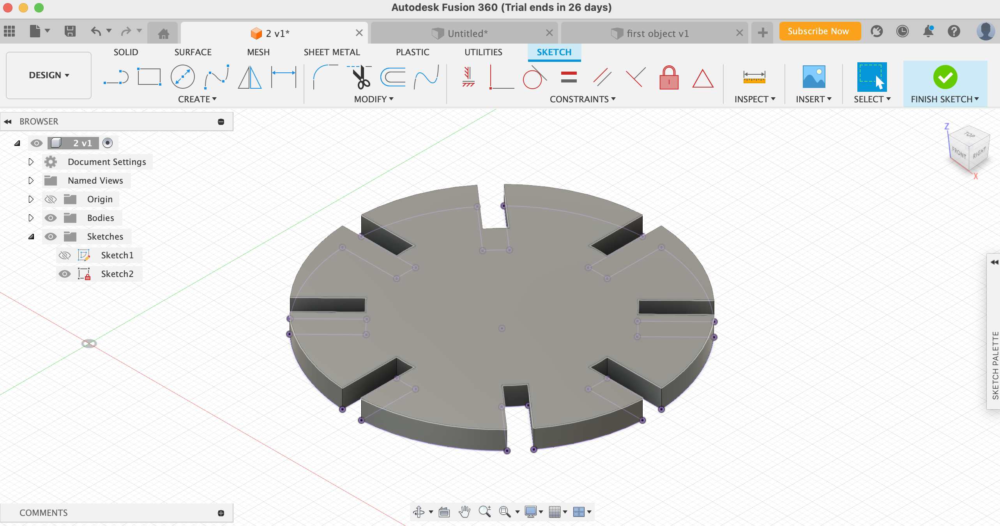
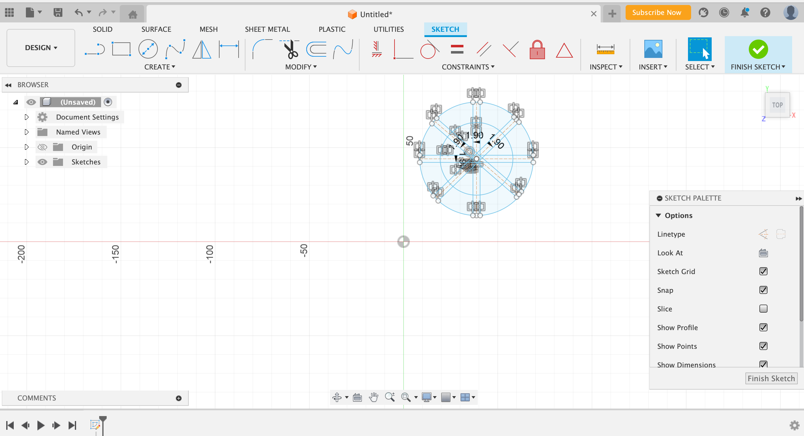

Week 2 : 2D Cutting
This week assignment we had to create a press-fit construction kit tha could be assemble in multiple ways accounting for the use of the lasercutter kerf. Furthermore, we had to select 2 household objects or components from the lab and model them in CAD.
Press-Fit Construction Kit
Materials Used
- Cardboard - Calipers - Creativity - Fusion 360 - InkscapeIntroduction
I decided to do my press-fit construction kit of wheels that could be assembled together to sort of do a prototype that ended up looking like a drone. To be really honest, I didnt had a specific shape I wanted to lassercut, but ended up with a circle with several notches by being inspired by other designs in google.1. Using Fusion 360
  Before I could even start designing, I really had to make sure that I did know how to use Fusin 360, and for that decided to watch several youtube videos that served me as an inspirational source to come up with my ideal shape. After building my knwoledge with this program, started to build my shape. I first created a skecth, and then draw a circle that had a diameter of 50mm. Afterwards, divided my circle into eight evenly distribuited pieces by creating construction lines along the x and y axes by pressing "control L". Once I had this, I offlined this trace lined by 1.9 mm and mirror them.2. Using Inkscape + Laser Printing
 Once I finished with my design and ensure it was as I wanted to be, I went ahead and exported the skecth to a DXF file. Then, imported the DXF file into Inkscape, where I changed the color of the lines from black to red so that it could be more visible. After this adjustments, exported this sketch to a PDF and opened it with adobe in the computer lcoated in the lab. I had to follow the instructions provided it in the wall as I didnt know how to use this new artifact, which took me more than expected. Here, I selected the number of pieces I wanted, in my case 10, and created it a grid of 5 x 2. Lastly, I selected the material "cardboard" and chose the thickness of the material, which was 3.8mm that I measured with the help of callipers. Printing time!!
Once I finished with my design and ensure it was as I wanted to be, I went ahead and exported the skecth to a DXF file. Then, imported the DXF file into Inkscape, where I changed the color of the lines from black to red so that it could be more visible. After this adjustments, exported this sketch to a PDF and opened it with adobe in the computer lcoated in the lab. I had to follow the instructions provided it in the wall as I didnt know how to use this new artifact, which took me more than expected. Here, I selected the number of pieces I wanted, in my case 10, and created it a grid of 5 x 2. Lastly, I selected the material "cardboard" and chose the thickness of the material, which was 3.8mm that I measured with the help of callipers. Printing time!!
Final Product
 OKOK, this is the final result of the pieces assembled. I would definetely say it took me around -5min to print my pieces. The wheels definetely proceeded to come the way that I expected and perfectly fit into each other on the second try!
OKOK, this is the final result of the pieces assembled. I would definetely say it took me around -5min to print my pieces. The wheels definetely proceeded to come the way that I expected and perfectly fit into each other on the second try!